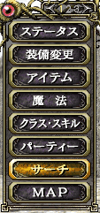
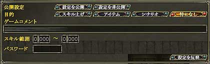

1.公開手順
ポートの開放に成功したら、自分のゲームを公開しましょう。
 
メニュー1ページ目の「サーチ」から「ホストゲーム設定」を選択してください。
ホストゲーム設定の「公開設定」のデフォルトは「設定を非公開」になっています。そのため、「設定を公開」に変更してください。それ以外にも、パーティーを組んで何をしたいかをコメント欄に書いてください(ゲストになりたいプレイヤーはたいていコメント欄を見ます)。
スキル範囲やパスワードは特別な場合をのぞき、設定しないことをおすすめします。特にスキル範囲の設定はゲストに見えないので、注意が必要です。
「目的」は明確な目的がある場合は設定しておくことをおすすめします。ホストゲームが常時40以上公開されている現在では、とにかく検索しやすくすることが重要です。

(ホストゲーム設定)

(ホストゲーム検索)
設定が完了したら、メニュー1ページ目の「サーチ」から「ホストゲームサーチ」を選ぶか、「G」キーを押して「ホストゲームサーチ」を開いてください。ここに自分のゲームが表示されていれば設定完了です。
2.スキル範囲について
スキル範囲についての説明をします。スキル範囲を設定すると、ゲームを検索しているプレイヤーに対してあなたが必要としているプレイヤーのクラスレベルを示すことができます。この値の設定でログインするプレイヤーに制限をかけることはできません。
ここで入力する値は、2つの欄に区切ってあります。左側の1桁だけ入力する方にはクラスのランクを、右の3桁まで入力する方にはクラスのレベルを入力してください。
例)
ランク1でクラスレベル80～90の人を招きたい・・・1, 80 ～ 1, 90 を入力
ランク2以上の人を招きたい・・・2, 000 ～ 5, 100 を入力
ランク1の人を招きたい・・・1, 000 ～ 1, 100 を入力
ランク2でクラスレベル80台の人を招きたい・・・2, 80 ～ 2, 80 を入力 |
|